About the Project
This artifact is a web application that provides employees at an animal shelter with an interface to query and view animals within their database.
This interface was comprised of three aspects, a list component that displayed specific entries, a pie chart that would display some analytic information, and a map that utilizes the geolocation data in the database.
The user is capable of sorting and filtering data from the interface.
This would enable the user to find specific information that they would need to complete their tasks of some sort.
For more details and direct access to files about this project go here.
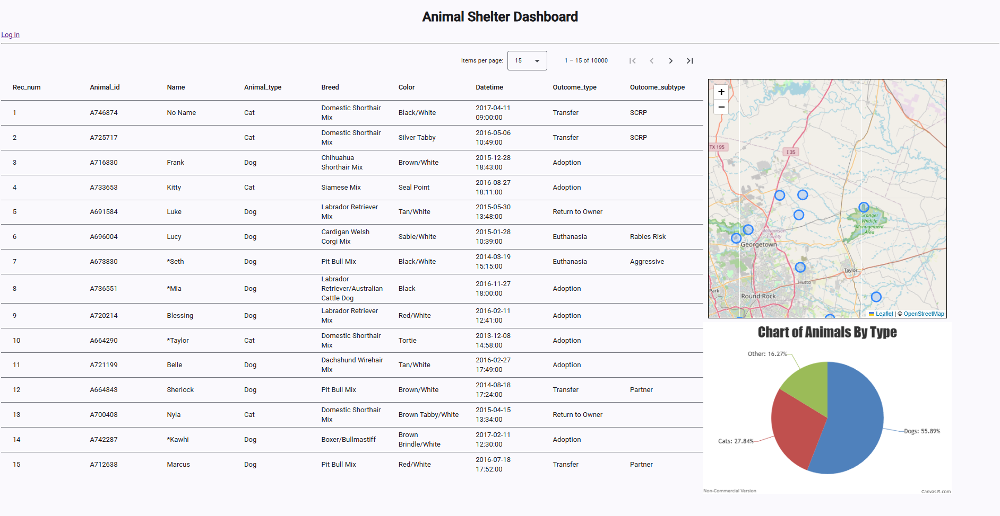
Image of the new Dashboard
Purpose
This item was chosen because the initial project is a small-scale full-scale stack application.
In particular, this application interfaces with a Mongo Database.
The way this initial project handles database interaction is rather direct.
The program connects directly with sensitive data hardcoded into the CRUD operations module.
The CRUD operations exist on a base module level, but the front-end is only capable of reading data.
Furthermore, the second python module is monolithic and handles everything else like querying the database, each component, and the html of the web page.
For my enhancements, I extended the CRUD operations to the front-end via api calls to an Express server
that is utilized by an Angular frontend in a single page application.
I also decoupled these components into separate modules.
Now that the user is capable of the rest of the other operations such as create, update, and delete, I added protections.
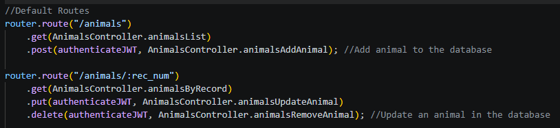
By appending the authentication to the route, the action cannot be done unless the user is verified.
These protections come in the form of validators for adding
and updating
a document, so that they follow the appropriate database schema.
I also added security with JSON web tokens, so a user be logged in before being able to perform actions that can change the database documents.
Even if they manage to somehow access the components, their request would be rejected due to their lack of authentication and authorization.
Lastly, I wanted to improve the performance of the application. I decided to use aggregation to implement server sided pagination.
There are 10,000 documents present in this database. While having all documents present is convenient for front-end interaction, it is still very costly.
The lag/strain from bulk loading everything at once is noticeable.
Especially in development as I constantly adjust the project, refreshing, and restarting components.
The get API call time would range from 200 to over 300 milliseconds on my system (an expensive desktop).
By adding server sided pagination, I do not load all the data at once but instead sift through it as needed on the front-end.
So, while this results in frequent calls, it balances the load between the front-end and back-end.
There are more calls, but the time of each call is roughly 7 to 10 milliseconds, which is hard for a user to detect/feel.
Images of Changes

Original Query times in new app.
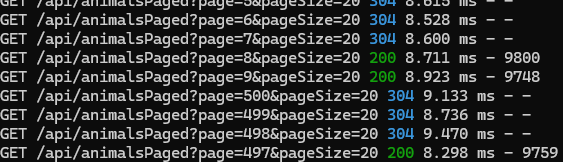
Query Times with Pagination.
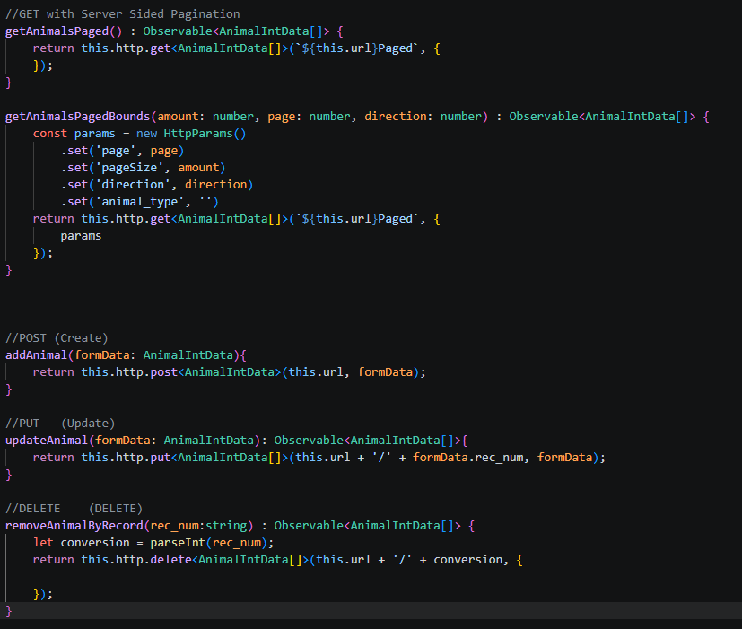
Data Service CRUD via REST Calls.
Reflection
The process of reconstructing an artifact, but a different software stack is somewhat disorienting.
While I have the direction and similar goals, knowing how to implement tools to meet said goals take some time.
The MEAN stack is, as I said beforehand, very flexible and widely supported, so finding the right tools to use as components in this application requires some comparison.
I do not want to use one tool because I am comfortable with it, I’d rather use a tool that is better suited for the task at hand.
However, this is a daunting process of Trial and Error.
I’ve run into many problems in development concerning component functionality, data conversion, routing capabilities, and capability between components.
My inexperience with some of the tools and dependencies caused many of these issues.
In the end, this is a way to improve my own skills and knowledge while executing my enhancements.
Converting to server-sided pagination was one of the biggest challenges in this enhancement.
Partly because of the issues mentioned above, using angular components that I am not familiar with increased the difficulty of properly utilizing the new form of aggregation database query.
This reliance on the server side meant I had to tweak some of the front-end components to utilize metadata coming from the server.
Hot it works:
In the Software Design/Engineering section, I explain how to setup the web page application and how to use it.
In this section, I will explain how the data is being handled in greater detail.
Data Construction
A major between this project and the original is the construction of the database and models.
- The collections for this app are utilizing schemas. These schemas are used to manage the data in a specific format in json documents.
They define the values, typing of values, requirements, and indexes.
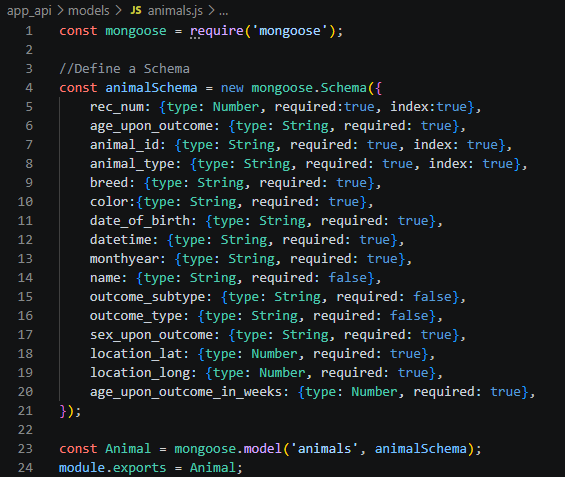
Animal Schema
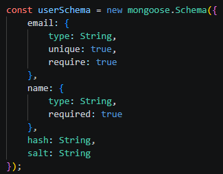
User Schema
This enables me to maintain consistency of the data as it flows through the application.
Since we now rely on the application to configure the data. We also utilize a script
to seed the database with animals adhering to this structure. There are 10000 documents present in the animals collection.
Mongo Queries and Routing
In order to call data, an express server is used to connect to the database. This server will be in between our front-end and database.
- We define these queries in our api through a controller file.
We export the queries for routing.
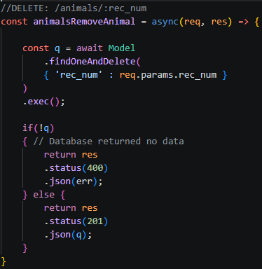
Example: Delete Query.
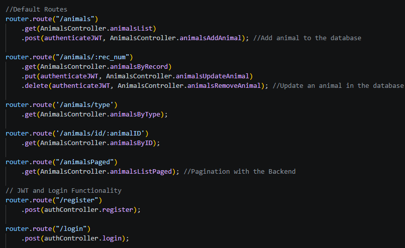
Routes Defined in App.
These routes are what will be used to communicate request from the frontend.
Front-end Communication
Our front-end requires a data service module
to make requests to our express server.
- These follow a REST api structure. These requests are then tied
to angular components for the user to interact with.
Data Service using routes.
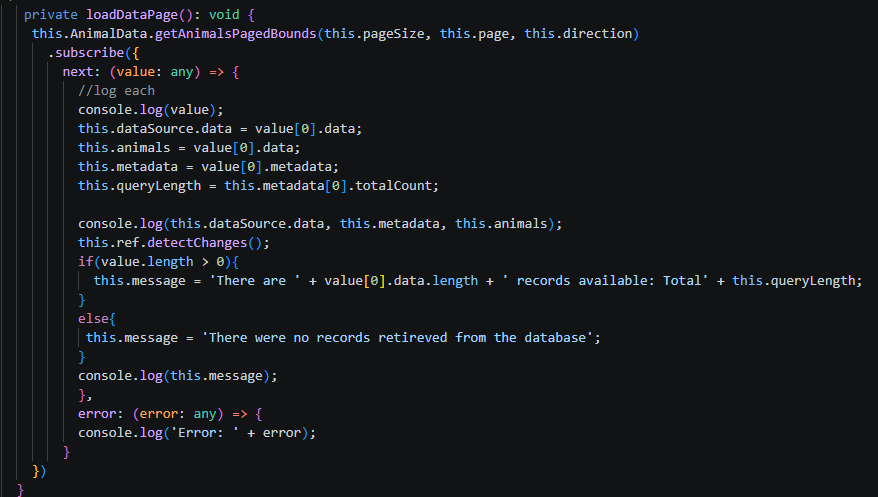
Loading data in into Table Grid Component.
In order to use the data in our Components, we need to subscribe and call the route on the data service.
This sends data to our grid which is utilized by the Angular component to make a table list.
Front-end Usage
In the previous section, the route being used was for loading data. This would be called on a per page basis, since
application uses server-sided pagination.
- Other components such as editing/deleting a record, rely a different route.
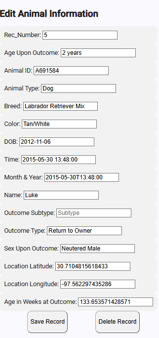
While using the same form, the buttons are tied to different calls.
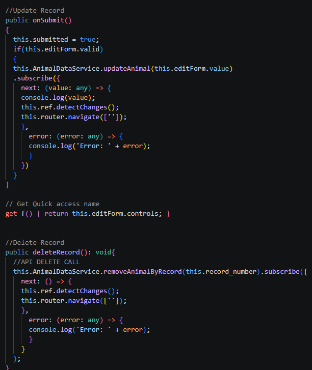
Code of different calls.
If I wanted to expand functionality of the application, I would have to follow the process of contructing the
back-end functionality, extend the api, and attach it to the angular app.